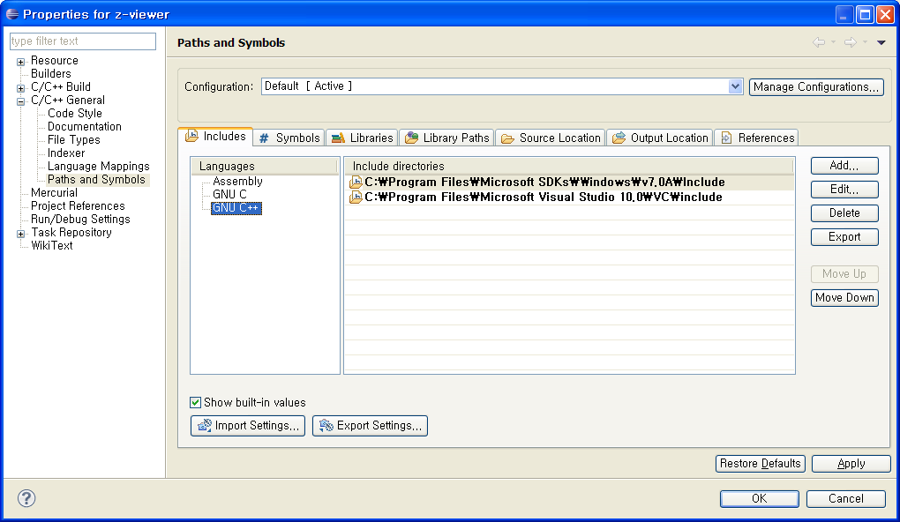

2010-06-30 01:13:28
eclipse 에서 visual studio 에서 사용하는 mfc나, win32 등을 편리하게 편집하려면, 특정 헤더 파일들의 경로를 지정해줘야 제대로 eclipse CDT 의 기능을 사용할 수 있다(intelisense, syntax highlighting등등).
Project 의 Properties 를 열어서, 아래와 같이 path 를 설정해준다.

path 설정을 한 후에는 Project 의 Index -> Rebuild 를 한번 해서 다시 indexing 하도록 해주자.
eclipse CDT 는 상당히 잘 찾아준다. :)